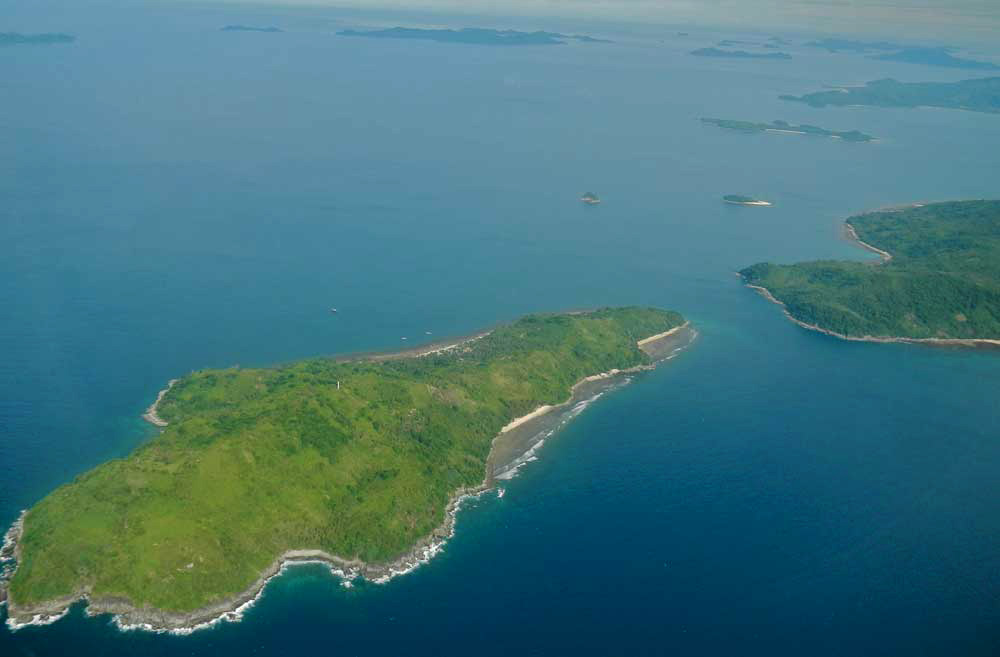
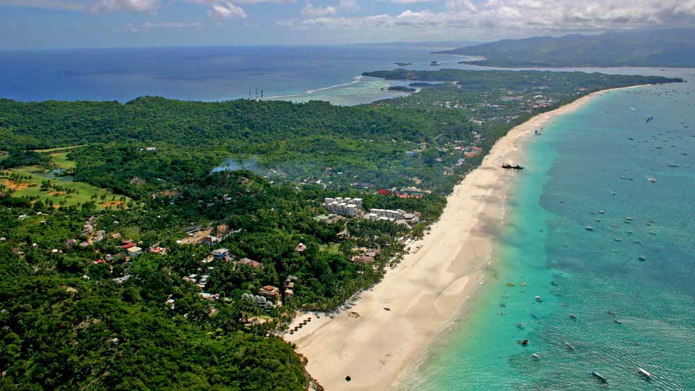

Listed below are 5 wonderful reasons that have almost 5 million individuals coming to see the Philippines every year, to take-in the endless miles of beautiful beaches covered in lovely white sand, that grace so many of the Philippines so many islands. The Philippines is an archipelago that has a total of 7,107 islands, with only about 1,000 or so are occupied– as well as many have one picturesque stretch of beautiful white sand. You can find so many gorgeous seaside towns that offer the vacationer so much, that it at times can be a bit tricky on deciding just where it is you would most like to visit. To assist you a bit in getting your vacation off to a good start, we have listed right for you our five most favorite beach towns most visited by foreign tourist and local travelers for the Philippines Islands.
The Blue Lagoon, Pagudpud, Luzon Island
Located in the northern part of Luzon Island is Pagudpud, and is an up and coming tourist destination, in fact this area on many occasions is compared to the island of Boracay, one of the Philippines most famous beach resort areas. However it can be said that Pagudpud is similar to and has the very same great white-sand coastlines and crystal clear blue waters, minus the large groups of tourist and over commercialization that has stated to plague Boracay. The Blue Lagoon, or known by the natives here as Maira-ira Beach is situated in a tiny cove area that offers soft white sand and water with a really beautiful deep blue color, and is really thought to be the most gorgeous beaches located here in the most northern part of the Philippines Islands. As of lately the Blue Lagoon has started to garner some attention as a go-to location for worldwide vacationers, and so many huge resorts have begun to develop at this awesome location.
El Nido Islands of, Palawan
For the year of 2015 the islands of El Nido has won the top position for "10 Most Beautiful Beaches in the world" from the world renowned Condé Nast Traveler. Palawan is a beautiful island filled paradise is also known for having the "Finest Beach and also Island Destination" by CNNgo. El Nido is where 50 or so islands that just happen to offer so many white sand coastlines to be found anywhere in the world, El Nido has significant sedimentary rock developments that shoot straight to the sky, bright blue-green water and incredible evening sunsets that offer magical photographs.
El Nido is a quite coastal town with a small community, and is considered by CNN Travel to be and entryway that will take you on a fantastic journey through the Philippines. Not only is El Nido beautiful, it also offers privacy from many of it's white beach coastlines, and another special note, some of the beautiful areas of El Nido Palawan were shown toward the end of the Bourne movie staring Jeremy Renner.
The warm tropical waters of El Nido are also where 50 varieties of marine life thrive among the many coral reefs, that bring into the area sea-cows, whales, as-well-as some sea turtles that are endangered, which makes El Nido a scuba diver's paradise.
Palaui Island, Cagayan Valley
An additional acclaimed area, Palaui is recognized for its untainted beaches and also the Cape Engaño Lighthouse, a historical Spanish colonial lighthouse that rests atop a hill, 300 feet over sea level. Palaui Island is a National Marine Reserve and is tough to obtain to, which is why tourists value its privacy. When it comes to the aquatic park, which has 17,660 acres, it's a great site for snorkeling and also diving since it is so distant. There are no resorts, so if you wish to remain, you'll have to camp or find a home stay.
Tubbataha Reefs Natural Park, Palawan
One of the most awesome attractions found here in the Philippines is the Tubbataha Reefs Natural Park (Bahurang Tubbataha) which is a UNESCO World Heritage Site situated at the center of the Sulu Sea, and just off southeast side of the island of Palawan. This aquatic as well as bird refuge is actually not beach community or even an island for that matter, however two atolls that are very big– the South Atoll as well as the North Atoll– are where more than 600 varieties of fish, coral reefs varieties that total 360, 11 shark varieties, 13 whale and dolphin varieties and also 1,100 species of tropical birds call home.
It should be noted that Tubbataha Coral Reef is really one of the most impressive coral reefs in the world, with CNNgo ranking it among the leading 8 scuba diving sites on the planet. Scuba divers call it a "real underwater jungle" and they will tell you that getting to Tubbataha Coral Reef is half the fun: Because this dive site requires that you visit only by a live-aboard boat.
Boracay, White Beach
The pure snow white sand as well as crystal-clear blue waters of Boracay Island do draw beach worshipers in droves from all corners of the world. At simply 4.5 miles long, the island of Boracay is home to over 13 beautiful stunning coastlines all covered in soft white sand, and not to mention the award-winning Boracay White Beach. Based on International Living, Boracay is likewise a scuba diver's heaven. White Coastline gets its name from the soft white sand and also is the location most regularly associated with Boracay, a 50-minute air travel from Manila, the main gateway into the Philippines. The very best time to visit the White sand beach of Boracay Island is during the completely dry season, which is for the months of October through May.
